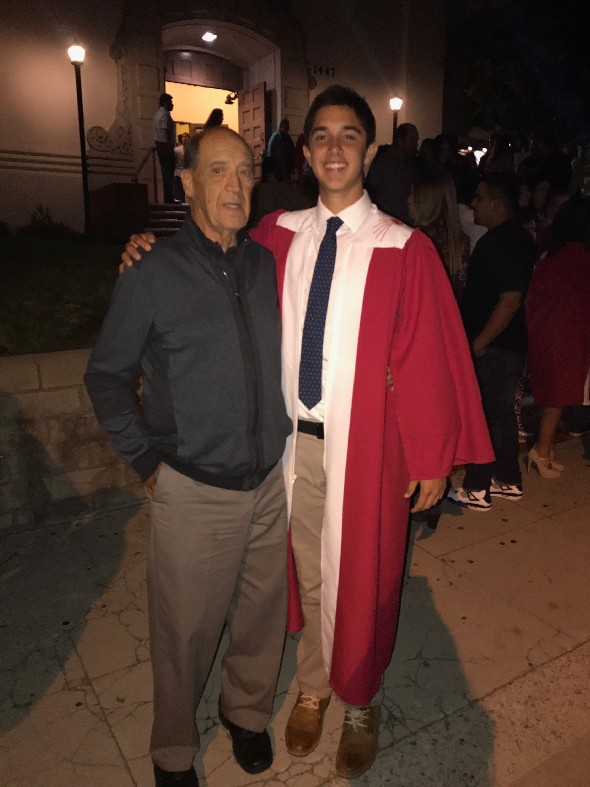

Hyper-Link-Self-Portrait: Nicholas Barr-Mira
Faith & Family
 Photograph #1: This image of me and my grandfather symbolizes the importance of family and faith in my life. The photograph was taken following my Confirmation, which is a Catholic sacrament that symbolizes the entrance into Catholic Adulthood. I consider myself to be a practicing Catholic, and the Catholic standards and values are very similar to the standards and values I hold myself to. The reason I chose my grandfather to represent a picture of my family is because he is the rock of my family. He was a man who represents what it means to sacrifice for family and put his family before himself. Throughout my life I have always been taught that I am nothing without family, and family is the only thing that can consistently be counted on. CLICK THIS LINK.
Eduction
Photgraph #2: This is the picture used on the identification card for my school. Although the image itself is not directly a representation of my education, the image is on a card that identifies me in my place of education. Education has always been of utmost importance to me because I believe education leads to opportunities and success. I also believe that education leads to a better world and a less impoverished world. Therefore, the more educated the world is as a whole, the safer and smarter place it will be. I also understand that the access to education I have had has been an absolute privilege. I do not take this privilege for granted at all which is why education is incredibly important to me. CLICK THIS LINK.
Football
Photograph #3: This photgraph of myself in a football uniform represents the importance of sports, specifically football, in my life. Football has played an extremely important and influential role to me and my family. I have played football for as long as I can remember, and it has provided me with opportunities to express my talents and attend the school of my dreams. Football is something that my family loves and has dictated the circumstances of my intermediate families life in the recent past. My brother plays in the NFL, and without him, my family would not be in the stable situation we are in today.CLICK THIS LINK.

I have recently moved on campus at UCLA and am beginning my journey as a student-athlete. I am excited and ready for the academic rigor and athletic challenges I am going to face this school year. While athlectics and academics will be constantly consuming much of my time, I will be sure to keep in touch with my family and continue to grow my relationship with God. You can find me on twitter by clicking this link or using my twitter handle @nickbarrmira for updates about what is happening in my life.